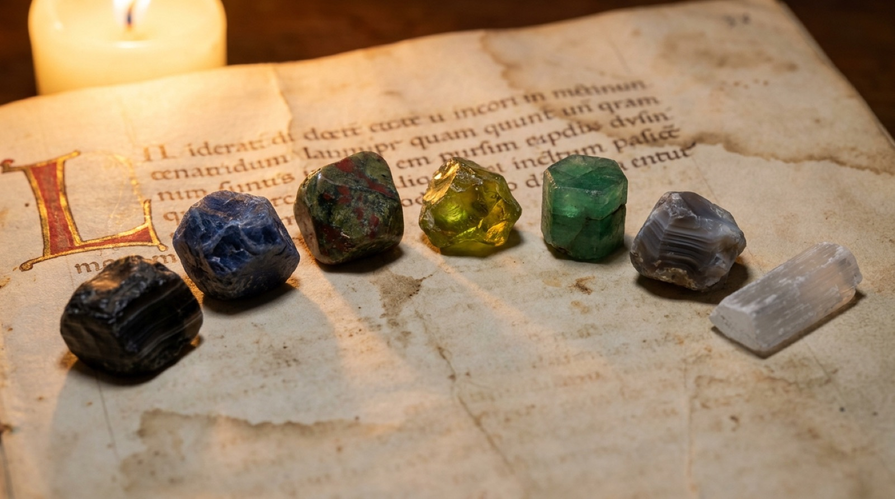
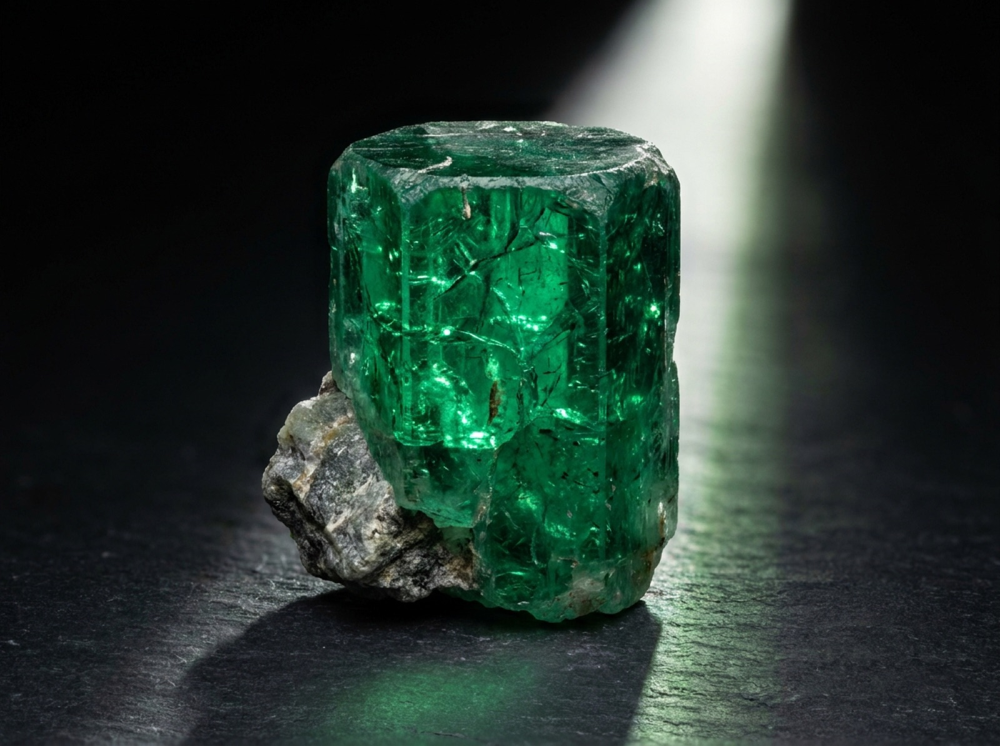

Steine, Sterne und ihre Zuordnung
Welcher Stein fehlt dir?
Die mittelalterlichen Lapidarien lesen den Stein als geronnenes Licht eines Planeten. Was am Himmel als Kraft umläuft, liegt in der Erde als Farbe und Härte fest. Wo ein Planet im Geburtshoroskop schwach steht, so die Lehre, kann sein Stein nachreichen, was ihm fehlt.
Venusstein rechnet dein Horoskop nach der überlieferten Methode durch: alle sieben sichtbaren Planeten, ihre Häuser, ihre wesentlichen und zufälligen Würden. Am Ende steht eine Rangfolge — und zu den schwächsten Planeten die Steine, die ihnen seit Jahrhunderten zugeordnet werden.

Drei Schritte
Erstens
Das Horoskop
Aus Geburtsdatum, Uhrzeit und Ort werden die Stände der sieben Planeten berechnet, dazu Aszendent und Medium Coeli.
Zweitens
Die Würden
Jeder Planet wird nach Lillys Tafel bewertet — Domizil, Erhöhung, Triplizität, Terminus, Gesicht, dazu Haus, Lauf und Stellung zur Sonne.
Drittens
Die Steine
Zu den drei schwächsten Planeten nennt das Lapidarium die überlieferten Steine — mit Hinweis, woher man sie bekommt.

Warum Venusstein
Der Smaragd ist bei Agrippa der Stein der Venus, und die Venus ist der Planet der Verbindung: dessen, was zusammenkommt und zusammenhält. Ein Lapidarium ist selbst eine solche Verbindung — zwischen dem, was oben umläuft, und dem, was unten liegt.
Die Seite behauptet nicht, dass Steine wirken. Sie gibt wieder, was die Überlieferung sagt, und rechnet den astrologischen Teil so genau, wie es ohne Ephemeridenwerk möglich ist.